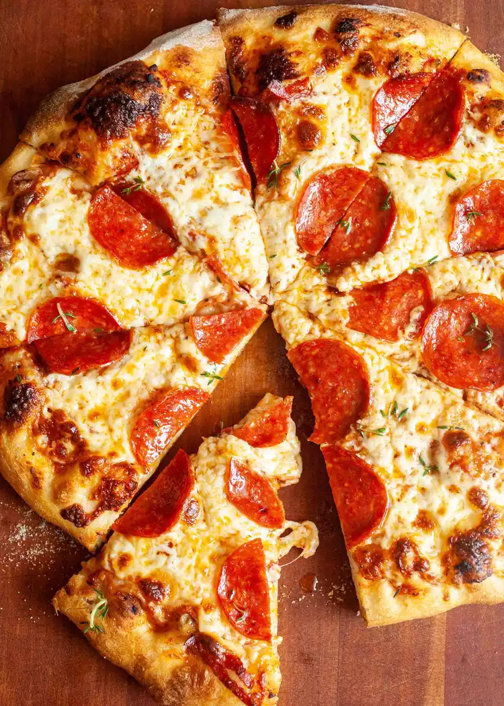

Pizza
Back to Main Page

Description
Why order takeout when you can make the perfect pizza at home? From crispy thin crust to cheesy deep-dish, our pizza recipes cover it all. Customize with your favorite toppings, try unique flavor combinations, and enjoy the magic of homemade pizza with fresh, delicious ingredients.
Ingredients
- 1 pizza dough (store-bought or homemade)
- ½ cup pizza sauce
- 1 ½ cups shredded mozzarella cheese
- 10-15 slices of pepperoni
- 1 tablespoon olive oil (optional)
Instructions
- Preheat Oven: Set your oven to 220°C (425°F).
- Prepare Dough: Roll out the pizza dough on a floured surface and place it on a baking sheet or pizza stone.
- Add Sauce: Spread the pizza sauce evenly over the dough, leaving a small border.
- Add Cheese & Pepperoni: Sprinkle mozzarella cheese over the sauce and place pepperoni slices on top.
- Bake: Place in the oven and bake for 12-15 minutes, until the crust is golden and the cheese is melted.
- Cool & Serve: Let the pizza cool for a couple of minutes, then slice and enjoy!